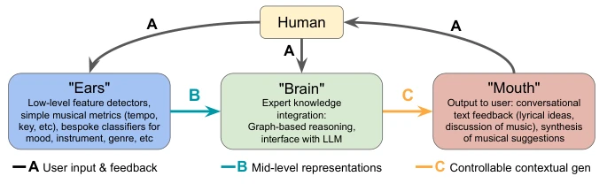
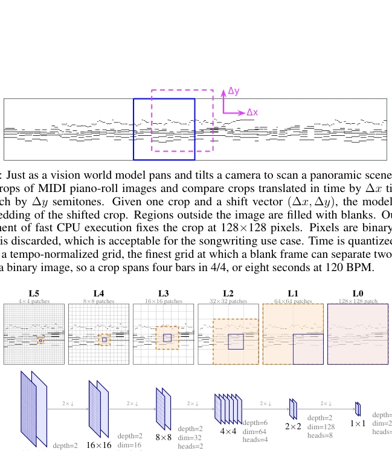
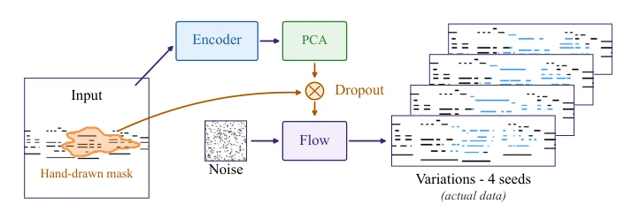
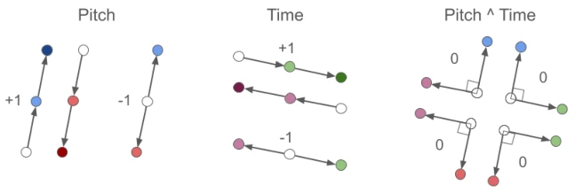
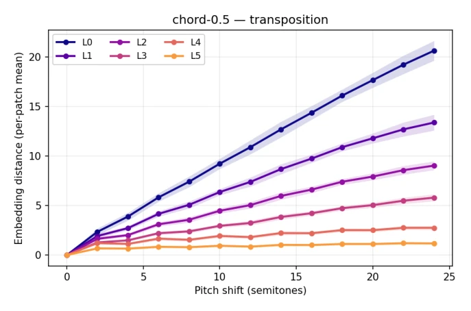
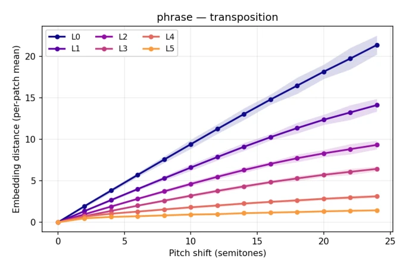
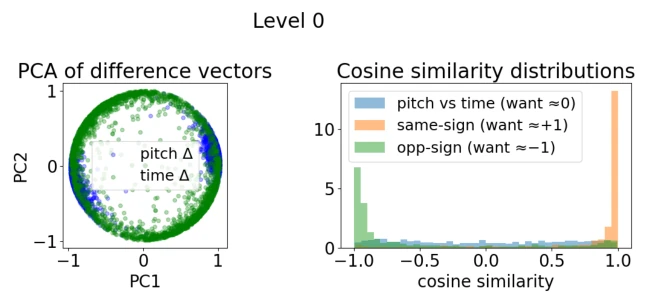
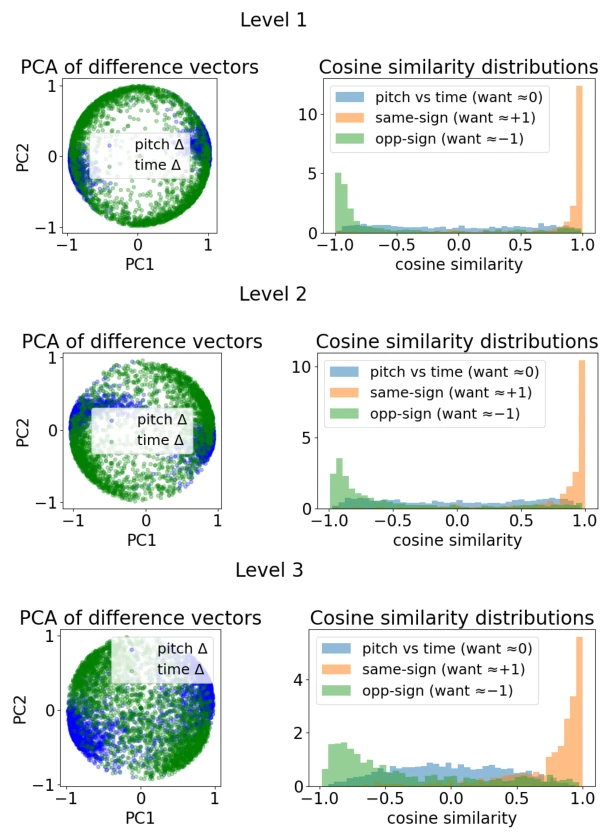
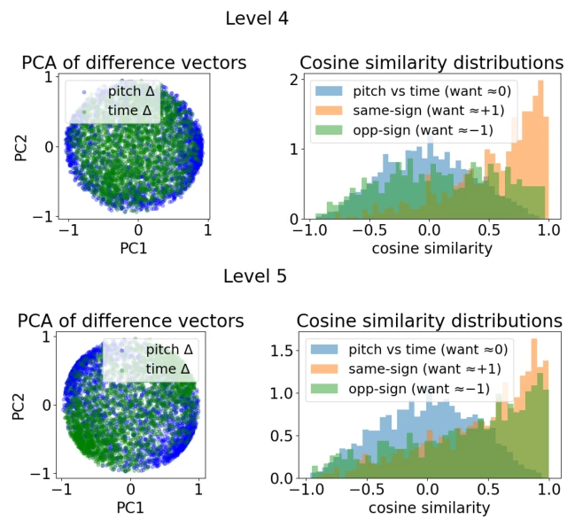
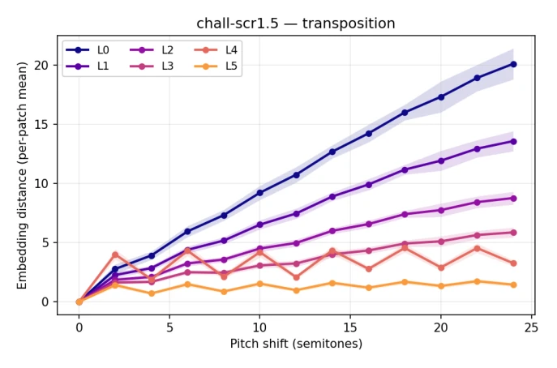

这篇论文试图打造一个“懂音乐”的 AI 制作人，号称“人类代理的耳朵和嘴巴”。核心是用自监督学习在 MIDI 钢琴卷帘图上建世界模型。亮点是层级表示确实对应了音乐的时间尺度（粗粒度管乐句，细粒度管音符），而且能在 CPU 上跑，对资源受限的创作者友好。但槽点也不少：把音乐当图像处理，丢掉了速度、音色等音频细节，对和声的理解必须靠额外监督，纯自监督下和弦识别惨不忍睹（0.18 到 0.54）。所谓的“世界模型”其实更像是一个强大的特征提取器，生成部分依赖 Flow Matching，虽然快但质量不如扩散模型。总的来说，是个不错的辅助工具，但离“自主创作”还差得远，更像是一个高级的自动补全插件，且与具身智能关联较弱，更多是符号音乐生成。
This paper attempts to build a "music-literate" AI producer, claiming to be the "ears and mouth of human agency". The core is building a world model on MIDI piano rolls using self-supervised learning. Highlights include that the hierarchical representation indeed corresponds to musical time scales (coarse-grained manages phrases, fine-grained manages notes), and it can run on CPU, friendly to resource-constrained creators. But there are many drawbacks: treating music as image processing loses audio details like tempo and timbre; understanding harmony relies on extra supervision; chord recognition is abysmal under pure self-supervision (0.18 to 0.54). The so-called "world model" is actually more like a powerful feature extractor; the generation part relies on Flow Matching, which is fast but quality is inferior to diffusion models. Overall, it is a decent auxiliary tool, but far from "autonomous creation," more like an advanced autocomplete plugin, weakly associated with embodied intelligence, mostly symbolic music generation.
研究动机Motivation
在 AI 时代保护人类创作 agency 是核心动机，作者不想让 AI 取代人类，而是像 Rick Rubin 那样提供反馈 [35]。现有大语言模型在音乐任务上表现不佳，需要专用感知模块 [25, 41]。之前的 JEPA 应用如 Stem-JEPA [32] 或 Music-JEPA [38] 多依赖音频或特定 token，且表征易坍缩或受位置编码主导 [15]。本文旨在构建无标签、无乐理词汇的层级世界模型，解决表征压缩与语义信息的权衡问题 [11]，并实现 CPU 端高效推理，避免云端依赖，确保人类保留最终决策权。
Protecting human creative agency in the AI era is the core motivation; the authors do not want AI to replace humans, but to provide feedback like Rick Rubin [35]. Existing large language models perform poorly on music tasks, requiring specialized perceptual modules [25, 41]. Previous JEPA applications such as Stem-JEPA [32] or Music-JEPA [38] mostly rely on audio or specific tokens, and representations are prone to collapse or dominated by positional encoding [15]. This paper aims to build an unlabeled, theory-free hierarchical world model, addressing the trade-off between representation compression and semantic information [11], and achieving efficient CPU-side inference, avoiding cloud dependency, ensuring humans retain final decision-making power.

Figure 1: The Ears/Brain/Mouth workflow for a conversational music co-writing agent. This paper develops the Ears and Mouth: perceptual representations (Section 3) rich enough to drive controllable generation of music suggestions (Section 4) without task-specific fine-tuning. The Brain, an expert- knowledge reasoning layer, is beyond the scope of this paper.
The overall process is divided into "Ears" (encoder) and "Mouth" (generator). The encoder adopts a 2.55M parameter hierarchical Swin V2 [22], input is MIDI piano roll, containing L0 to L5 six levels. Training objectives combine JEPA style: equivariant loss (Lequiv) maintains pitch/time translation structure, SIGReg prevents representation collapse [2], masked embedding prediction (LMEP) [1] and soft factorization loss (Lfact). The generator adopts conditional Flow Matching [21], flowing in pixel space, using PCA-reduced encoder output as condition, supporting graphical Inpainting via Dropout. Key innovation lies in hierarchical representation naturally emerging musical structure, and without compression, maintaining information volume, making coarse-grained levels correspond to phrases, fine-grained to notes.

Figure 3: Our 2.55 million-parameter hierarchical Swin V2 Encoder. Model architecture hyperparam- eters were selected via ablation studies detailed in the Supplemental Materials (Appendices A–F).

Figure 4: Unified generation and inpainting. The encoder’s PCA-reduced conditioning maps pass through a dropout stage that zeroes patches under a hand-drawn mask, at user-chosen strengths per level; a flow-matching model then generates a window from noise, guided only by the surviving conditioning (10 Euler steps, guidance 1). Outside the mask the output is overwritten with the input, preserving untouched music exactly. With no mask, the same pipeline performs ordinary conditioned generation, varied by seed or guidance strength. The piano rolls are real data: one POP909 excerpt and four generated variations (cropped to the occupied pitch range for display).

Figure 5: Soft factorization targets. Differences between pairs of embeddings are encouraged to be parallel (t= + 1), anti-parallel (t= −1), or orthogonal (t=0) depending on augmentation type and sign. Directions are not prescribed; only their pairwise geometry is constrained.
Using Lakh and POP909 datasets, baselines include DINOv2 [29] and early MIDI-RAE-JEPA [17]. Evaluation detects pitch, chords, phrases, etc., via linear probe, metrics include R2 and AP. Results show hierarchical structure corresponds to musical time scale, coarse-grained decodes phrases, fine-grained decodes note density. Under pure self-supervision chord recognition is weak (0.18), adding chord supervision head improves to 0.54, tonality detection rises from 0.16 to 0.70. Inference speed is about 2.8 seconds/suggestion on CPU, 0.6 seconds on MPS. Ablation experiments show dataset size has limited impact, but auxiliary supervision significantly enhances harmonic representation, and pixel F1 reconstruction reaches 0.996.

Figure 10: Per-level embedding distance versus pitch transposition shift for chord-0.5; shaded bands are ±1 std over probe samples.

Figure 11: Per-level embedding distance versus pitch transposition shift for phrase; shaded bands are ±1 std over probe samples.
其他图片Other Figures

Figure 6: Example soft factorization results, Level 0. Left: PCA of normalized embedding difference vectors for the three target types, showing the expected geometric relationships. Right: histograms of cosine-similarity distributions for each pair type, with means indicated by dashed lines.

Figure 7: Soft factorization results for levels L1, L2, and L3 (top to bottom), in the format of Figure 6.

Figure 8: Soft factorization results for L4 and L5 (top to bottom). The factorization loss is applied only at L0–L2; the geometry visible at L3–L5 is inherited through the shared backbone rather than directly enforced.

Figure 9: Per-level embedding distance versus pitch transposition shift for chall-scr1.5; shaded bands are ±1 std over probe samples.